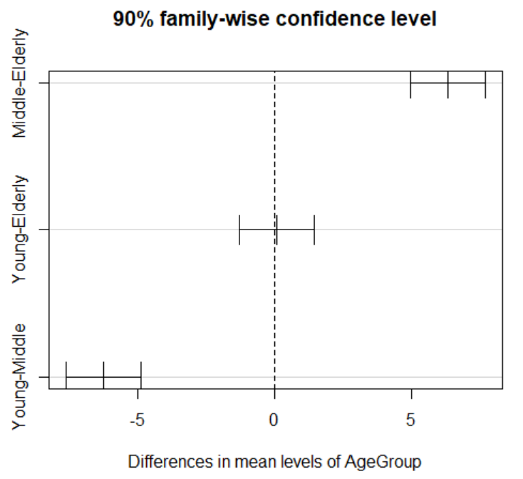

ฝึกกับโจทย์จริง · Cash Offers ANOVA (Assignment 6)
Reference: สูตร ANOVA + Post-hoc Cheat Sheet →
Worked Example — Assignment 6 Solution, ข้อ 1 (Cash Offers)
Cash Offers: ไล่โจทย์ ANOVA ข้อสอบจริงทีละส่วน (a)–(i)
บทเรียนนี้ต่อจาก Lesson 6 (Single Factor ANOVA) โดยตรง — แทนที่จะอ่านทฤษฎีจากสไลด์ เราจะไล่เฉลยโจทย์ข้อสอบจริง (cashoffers.csv) ทีละส่วนแบบเดียวกับที่ต้องทำในห้องสอบ: เขียนสมการ cell means/factor effects, อ่าน ANOVA table, ทำ F-test, เช็ค assumption จาก residual, และแปลผล post-hoc comparison ด้วย Tukey's HSD. ทุกตัวเลขในบทนี้คัดลอกมาจาก R output จริงของ Assignment6_Solution.pdf ทั้งหมด ไม่มีตัวเลขสมมติ — เป้าหมายคือให้เห็นว่าทักษะ 4 ข้อที่ฝึกใน Lesson 6 ถูกใช้ในข้อสอบจริงอย่างไร.
โจทย์และการออกแบบการทดลอง
คำถามวิจัย: อายุของเจ้าของรถ (owner) มีผลต่อขนาดของ cash offer ที่ได้จากดีลเลอร์หรือไม่
Factor: AgeGroup มี \(r=3\) ระดับ — Young, Middle, Elderly
แต่ละกลุ่มมี "เจ้าของ" (owner) 12 คน รวม \(n_T = 3\times12 = 36\) คน — balanced design
แต่ละคนไปขอราคาจากดีลเลอร์ 1 รายที่สุ่มมา (randomization) สำหรับรถมือสองรุ่นเดียวกัน (อายุ 6 ปี ราคาระดับกลาง)
ตัวแปรตอบสนอง CashOffer มีหน่วยเป็น "ร้อยดอลลาร์" (hundred dollars) — เช่น 21.5 หมายถึง $2,150
(a) Boxplot ของ Offer ตาม Age Group — เช็ค Mean และ Variance ด้วยตา
Assignment 6, ข้อ (a): Boxplot ของ CashOffer แยกตาม AgeGroup พร้อม dot plot เทียบ
อ่านตัวเลขจากกล่องจริง:
Middle : กล่อง (IQR) อยู่ในช่วงประมาณ 27–29 median ≈ 27.5 หนวด (whisker) ยาวจาก 26 ถึง 30 — ทั้งกล่องอยู่สูงกว่า Elderly และ Young อย่างชัดเจนโดยไม่ทับกันเลย Elderly : กล่องอยู่ในช่วงประมาณ 20–22.5 median ≈ 21 หนวดยาวจาก 19 ถึง 25 (พิสัยรวม ≈ 6 หน่วย)Young : กล่องอยู่ในช่วงประมาณ 20.5–22.5 median ≈ 21.5 หนวดยาวจาก 19 ถึง 25 (พิสัยรวม ≈ 6 หน่วยเช่นกัน)Middle มีพิสัยรวมแคบกว่า (26–30 = 4 หน่วย) เมื่อเทียบกับ Elderly/Young (≈6 หน่วย) — ตรงกับคำตอบในเฉลย: "variability of the observations appears to be approximately the same for all three groups although the variability in the middle age group is slightly smaller"
สรุปสองคำถามของโจทย์: (1) ค่าเฉลี่ยของกลุ่มต่างกันชัดเจน (Middle สูงกว่ากลุ่มอื่นมาก) (2) ความแปรปรวนภายในกลุ่มใกล้เคียงกัน ทั้งสามกลุ่ม (Middle แคบกว่าเล็กน้อยเท่านั้น ไม่ถึงขั้นละเมิด equal-variance assumption) — สัญญาณล่วงหน้าเดียวกับที่ Lesson 6 หัวข้อ 2 อธิบาย: between-group variability สูงเทียบกับ within-group variability จะทำให้ F สูง.
(b) Fitted Values จาก aov()
> aovmodel<-aov(CashOffer~AgeGroup, data=cash)
> fitted(aovmodel)
1 2 3 4 5 6 7 8
21.50000 21.50000 21.50000 21.50000 21.50000 21.50000 21.50000 21.50000
9 10 11 12 13 14 15 16
21.50000 21.50000 21.50000 21.50000 27.75000 27.75000 27.75000 27.75000
17 18 19 20 21 22 23 24
27.75000 27.75000 27.75000 27.75000 27.75000 27.75000 27.75000 27.75000
25 26 27 28 29 30 31 32
21.41667 21.41667 21.41667 21.41667 21.41667 21.41667 21.41667 21.41667
33 34 35 36
21.41667 21.41667 21.41667 21.41667
Fitted value ของแต่ละ observation คือค่าเฉลี่ยตัวอย่างของกลุ่มที่มันสังกัด — ตรงกับ cell means model \(\hat{Y}_{ij}=\bar{Y}_{i\cdot}\) ที่ Lesson 6 หัวข้อ 5 อธิบายไว้
มีแค่ 3 ค่าที่เป็นไปได้เท่านั้น (21.5, 27.75, 21.41667) เพราะมี \(r=3\) กลุ่ม — obs 1–12 fitted=21.5 (กลุ่ม Young), obs 13–24 fitted=27.75 (กลุ่ม Middle), obs 25–36 fitted=21.41667 (กลุ่ม Elderly) ตามลำดับที่ข้อมูลถูกบันทึกไว้ใน cashoffers.csv
(c) Cell Means Model
> print(model.tables(aovmodel, "means"))
Tables of means
Grand mean
23.55556
AgeGroup
AgeGroup
Elderly Middle Young
21.417 27.750 21.500
Cell Means Model — Cash Offers
\[Y_{ij} = \mu_i + \varepsilon_{ij}, \quad \varepsilon_{ij}\sim\text{iid } N(0,\sigma^2)\]
ค่าประมาณ: \(\hat{\mu}_{Elderly}=21.417\), \(\hat{\mu}_{Middle}=27.750\), \(\hat{\mu}_{Young}=21.500\) (หน่วย: ร้อยดอลลาร์)
ยืนยันตัวเลข: grand mean \(=(21.417+27.750+21.500)/3=23.556\) ✓ ตรงกับ 23.55556 ที่ print ออกมา
Elderly ($2,141.70) และ Young ($2,150.00) ใกล้เคียงกันมาก ในขณะที่ Middle ($2,775.00) สูงกว่าทั้งสองกลุ่มประมาณ $625–$633
(d) Factor Effects Model
> print(model.tables(aovmodel, "effect"))
Tables of effects
AgeGroup
AgeGroup
Elderly Middle Young
-2.139 4.194 -2.056
Factor Effects Model — Cash Offers
\[Y_{ij} = \mu + \tau_i + \varepsilon_{ij}, \quad i=1,2,3\]
โดย \(\mu = 23.56\), \(\tau_{Elderly} = -2.139\), \(\tau_{Middle} = 4.194\), \(\tau_{Young} = -2.056\) ภายใต้ constraint \(\sum\tau_i=0\)
เช็ค constraint: \(-2.139+4.194-2.056 = -0.001 \approx 0\) ✓ (ต่างจาก 0 เพราะการปัดเศษทศนิยม 3 ตำแหน่งเท่านั้น)
แต่ละ \(\tau_i\) = ค่าเฉลี่ยกลุ่ม \(i\) ลบ grand mean เช่น \(\tau_{Middle}=27.750-23.556=4.194\) ✓ — ตรงกับที่ Lesson 6 หัวข้อ 3 อธิบายว่า \(\tau_i\) คือ "ผลของกลุ่ม \(i\)" ที่เบี่ยงจาก grand mean
\(\tau_{Middle}=4.194\) เป็นบวกและมีขนาดใหญ่ที่สุด — ยืนยันว่า Middle เป็นกลุ่มที่ดึงค่าเฉลี่ยขึ้นจาก grand mean มากที่สุด ในขณะที่ Elderly กับ Young ต่างดึงลงในทิศทางเดียวกัน (ทั้งคู่ \(\tau_i\) เป็นลบ) และขนาดใกล้เคียงกัน (-2.139 vs -2.056)
(e) ANOVA Table
> summary(aovmodel)
Df Sum Sq Mean Sq F value Pr(>F)
AgeGroup 2 316.7 158.36 63.6 4.77e-12 ***
Residuals 33 82.2 2.49
---
Signif. codes: 0 '***' 0.001 '**' 0.01 '*' 0.05 '.' 0.1 ' ' 1
Df=2 คือ \(r-1=3-1=2\), Residuals Df=33 คือ \(n_T-r=36-3=33\)Sum Sq=316.7 คือ SSTR (between-group), Mean Sq=158.36 คือ MSTR \((=316.7/2)\)Residuals Sum Sq=82.2 คือ SSE (within-group), Mean Sq=2.49 คือ MSE \((=82.2/33)\)F value=63.6 คือ \(F=MSTR/MSE=158.36/2.49\approx63.6\) — F สูงมาก ตรงกับที่คาดไว้จากหัวข้อ (a) ที่ between-group variability (ค่าเฉลี่ยกลุ่มต่างกันมาก) สูงกว่า within-group variability (กล่อง boxplot แคบ) อย่างชัดเจน
(f) F-test สำหรับความเท่ากันของ Factor Level Means
Hypotheses: \(H_0: \mu_{Young} = \mu_{Middle} = \mu_{Elderly}\) เทียบกับ \(H_1:\) ไม่ใช่ \(H_0\) (มีอย่างน้อยหนึ่งคู่ที่ค่าเฉลี่ยต่างกัน)
Test statistic: \(F=63.6\) บน df \((2,33)\)
p-value: \(4.77\times10^{-12}\) — เล็กกว่า \(\alpha=0.05\) มาก
Decision: ปฏิเสธ \(H_0\) ที่ระดับนัยสำคัญ 5%
ประโยคแปลผล F-test (ตามเฉลยข้อสอบ)
"มีหลักฐานที่หนักแน่นว่าค่าเฉลี่ย cash offer ของอย่างน้อย 2 กลุ่มอายุแตกต่างกัน (strong evidence that factor level means appear to differ in at least 2 age groups ) ที่ระดับนัยสำคัญ 5% (\(F(2,33)=63.6\), \(p=4.77\text{e-}12\))" — สังเกตว่า F-test เดียวยังไม่บอกว่าคู่ไหนต่างจากคู่ไหน ต้องรอ post-hoc ในส่วน (i)
(g) Residual Check — เช็ค Assumption ของ ANOVA
Assignment 6, ข้อ (g): Residuals vs AgeGroup (ซ้าย) และ Normal Q-Q Plot (ขวา)
Constant variance (panel ซ้าย): ที่กลุ่ม 1 (Elderly) และกลุ่ม 3 (Young) residual กระจายจากประมาณ -2.5 ถึง 3.5 (พิสัย ≈ 6) ในขณะที่กลุ่ม 2 (Middle) กระจายแคบกว่าเล็กน้อยจากประมาณ -1.8 ถึง 2.2 (พิสัย ≈ 4) — สอดคล้องกับข้อสังเกตในส่วน (a) ว่า Middle มี variability แคบกว่ากลุ่มอื่นเล็กน้อย แต่ไม่ถึงขั้นละเมิด equal-variance assumptionNormality (panel ขวา — Normal Q-Q plot): จุดข้อมูลเกาะเส้นทแยงมุมค่อนข้างดีตลอดช่วง theoretical quantile -2 ถึง 2 มีเบี่ยงเบนเล็กน้อยที่ปลายทั้งสองข้าง (จุดซ้ายสุดที่ประมาณ -2, 3.5) ซึ่งเป็นเรื่องปกติของ sample size 36 — ไม่มีสัญญาณของการละเมิด normality อย่างรุนแรงIndependence : มาจาก design ของการทดลอง (สุ่มดีลเลอร์ให้แต่ละ "owner" อย่างเป็นอิสระ) ไม่ใช่สิ่งที่เช็คจาก residual plot ได้โดยตรง
สรุปตรงกับเฉลย: "All the assumptions look fine. Slightly smaller variance for the middle age group comparing to the other two age groups" — assumption ทั้งหมดผ่าน ความแตกต่างของ variance ที่เห็นเล็กน้อยไม่ถึงขั้นเป็นปัญหา
(h) ธรรมชาติของความสัมพันธ์ระหว่างอายุกับ Cash Offer
จากค่าเฉลี่ยในส่วน (c) — Middle ($2,775) สูงกว่า Elderly ($2,141.70) และ Young ($2,150) อย่างชัดเจน ในขณะที่ Elderly กับ Young แทบไม่ต่างกันเลย — ความสัมพันธ์ไม่ใช่เชิงเส้น ตามอายุ (ไม่ใช่ "ยิ่งแก่ยิ่งได้ราคาสูง/ต่ำ") แต่เป็นรูปแบบที่กลุ่มกลางโดดขึ้นมาเดี่ยว ๆ : เจ้าของรถกลุ่มวัยกลางคนมักจะได้ (หรือคาดหวัง) cash offer สูงกว่ากลุ่มอายุอื่นสำหรับรถมือสองคันเดียวกัน — ตรงกับคำตอบเฉลย: "Owners in the middle age group tends to expect higher cash offers for their used cars"
(i) Post-hoc: Tukey's HSD ที่ 90% Family Confidence
> TukeyHSD(aovmodel, conf.level=0.90)
Tukey multiple comparisons of means
90% family-wise confidence level
Fit: aov(formula = CashOffer ~ AgeGroup, data = cash)
$AgeGroup
diff lwr upr p adj
Middle-Elderly 6.33333333 4.963842 7.702825 0.0000000
Young-Elderly 0.08333333 -1.286158 1.452825 0.9908192
Young-Middle -6.25000000 -7.619492 -4.880508 0.0000000

Assignment 6, ข้อ (i): Tukey's 90% Family-Wise Confidence Intervals ของทั้ง 3 คู่
Middle − Elderly : diff = 6.333 ($633.33), 90% CI (4.964, 7.703) — ไม่ครอบคลุม 0 เลย, p adj ≈ 0 → นัยสำคัญ — \(\mu_{Middle} \neq \mu_{Elderly}\)Young − Elderly : diff = 0.083 ($8.33), 90% CI (−1.286, 1.453) — ครอบคลุม 0 , p adj = 0.991 → ไม่นัยสำคัญ — \(\mu_{Young} = \mu_{Elderly}\)Young − Middle : diff = −6.250 (−$625.00), 90% CI (−7.619, −4.881) — ไม่ครอบคลุม 0 เลย, p adj ≈ 0 → นัยสำคัญ — \(\mu_{Young} \neq \mu_{Middle}\)
สรุปผล Post-hoc (ตามเฉลยข้อสอบ)
\(\mu_{Middle} \neq \mu_{Elderly}\), \(\mu_{Young} = \mu_{Elderly}\), \(\mu_{Young} \neq \mu_{Middle}\) — พูดง่าย ๆ คือกลุ่ม Middle แยกตัวออกมาต่างจากอีกสองกลุ่มอย่างมีนัยสำคัญ ในขณะที่ Elderly กับ Young มีค่าเฉลี่ย cash offerไม่ต่างกันทางสถิติ ที่ 90% family-wise confidence level — ยืนยัน pattern เดียวกับที่อ่านได้จาก boxplot ในส่วน (a) และค่าเฉลี่ยในส่วน (c)
บทเรียนนี้ไล่ครบทุกส่วนของ Assignment 6 ข้อ 1 (Cash Offers) ตามเฉลยต้นฉบับ 4 หน้า ตั้งแต่ส่วน (a) ถึง (i) ไม่มีส่วนใดถูกข้าม
ทบทวนด้วยแบบฝึกหัด
คำถาม 1 อ่าน ANOVA Table
จาก ANOVA table ของ Cash Offers (AgeGroup Df=2, Sum Sq=316.7, Residuals Df=33, Sum Sq=82.2) ค่า MSE เท่ากับเท่าใด (โดยประมาณ) และมาจากการคำนวณอย่างไร?
158.36 — จาก 316.7/2
2.49 — จาก 82.2/33 (SSE หารด้วย df ของ Residuals)
63.6 — จาก 158.36/2.49
23.56 — จาก grand mean ของทั้ง 36 observation
คำถาม 2 แปลผล F-test
จากผล \(F(2,33)=63.6\), \(p=4.77\text{e-}12\) ที่ \(\alpha=0.05\) ข้อสรุปใดถูกต้องที่สุด?
ไม่ปฏิเสธ \(H_0\) เพราะ F สูงเกินไปจนน่าสงสัย
ปฏิเสธ \(H_0\) — มีหลักฐานหนักแน่นว่าค่าเฉลี่ย cash offer อย่างน้อย 2 กลุ่มอายุแตกต่างกัน
ปฏิเสธ \(H_0\) และสรุปได้ทันทีว่าทั้ง 3 คู่ (Middle-Elderly, Young-Elderly, Young-Middle) ต่างกันหมด
ไม่สามารถสรุปได้ เพราะ df ของ Residuals (33) น้อยกว่า sample size
คำถาม 3 แปลผล Tukey — คู่ที่ไม่นัยสำคัญ
จาก TukeyHSD คู่ Young-Elderly ให้ diff=0.083, 90% CI (−1.286, 1.453), p adj=0.991 ข้อสรุปใดถูกต้อง?
ไม่มีหลักฐานว่าค่าเฉลี่ย cash offer ของกลุ่ม Young กับ Elderly ต่างกัน เพราะ CI ครอบคลุม 0 และ p adj สูงกว่า 0.10 มาก
Young สูงกว่า Elderly อย่างมีนัยสำคัญ เพราะ diff เป็นบวก
สรุปไม่ได้เพราะ Tukey ใช้ไม่ได้กับคู่ที่ diff น้อยกว่า 1
นัยสำคัญที่ \(\alpha=0.10\) เพราะ 90% CI แคบกว่า 95% CI เสมอ
คำถาม 4 Factor Effects Model
จาก factor effects model ของ Cash Offers: \(\mu=23.56\), \(\tau_{Elderly}=-2.139\), \(\tau_{Middle}=4.194\), \(\tau_{Young}=-2.056\) ค่า \(\hat{\mu}+\hat{\tau}_{Middle}\) เท่ากับเท่าใด และหมายถึงอะไร?
27.75 — ค่าเฉลี่ยของกลุ่ม Middle (\(\hat{\mu}_{Middle}\)) ตรงกับที่ได้จาก cell means model
4.194 — ผลต่างระหว่าง Middle กับ Elderly
21.42 — ค่าเฉลี่ยของกลุ่ม Elderly
0 — เพราะ \(\sum\tau_i=0\) ตาม constraint
คำถาม 5 เช็ค Assumption จาก Residual Plot
จาก residual plot ของ Cash Offers กลุ่ม Middle มีพิสัยของ residual แคบกว่ากลุ่ม Elderly และ Young เล็กน้อย (≈4 เทียบกับ ≈6) ข้อสรุปที่ถูกต้องที่สุดคือ?
Constant variance assumption ยังถือว่าผ่านได้ — ความต่างเล็กน้อยไม่ถึงขั้นละเมิด homoscedasticity อย่างรุนแรง
ละเมิด constant variance อย่างรุนแรง ต้องทำ transformation ก่อนวิเคราะห์ต่อ
ละเมิด normality เพราะพิสัยของแต่ละกลุ่มไม่เท่ากัน
ละเมิด independence เพราะกลุ่ม Middle มีตัวแปรกวนที่กลุ่มอื่นไม่มี
คำถาม 6 หน่วยเงินจริง
CashOffer มีหน่วยเป็น "ร้อยดอลลาร์" ผลต่างเฉลี่ย Middle−Elderly เท่ากับ 6.333 ในหน่วยเดิม เทียบเป็นดอลลาร์จริงเท่ากับเท่าใด?
$6.33
$63.33
$633.33
$6,333.00
คำถาม 7 (Free response — รูปแบบข้อสอบจริง) เขียนประโยคแปลผล F-test ฉบับสมบูรณ์
จากผล ANOVA table ของ Cash Offers (\(F=63.6\), \(df=(2,33)\), \(p=4.77\text{e-}12\)) จงเขียนประโยคแปลผลที่สมบูรณ์ (ต้องระบุ \(H_0\)/\(H_1\), การตัดสินใจ, ค่าสถิติ, และข้อสรุปในบริบทของปัญหาโดยเอ่ยชื่อกลุ่มอายุจริง)
เฉลย
"ทดสอบ \(H_0: \mu_{Young}=\mu_{Middle}=\mu_{Elderly}\) เทียบกับ \(H_1:\) ไม่ใช่ \(H_0\) ที่ \(\alpha=0.05\) ปฏิเสธ \(H_0\) (\(F(2,33)=63.6\), \(p=4.77\text{e-}12 \ll 0.05\)) สรุปได้ว่ามีหลักฐานหนักแน่นว่าค่าเฉลี่ย cash offer แตกต่างกันอย่างมีนัยสำคัญทางสถิติระหว่างกลุ่มอายุ Young, Middle, Elderly อย่างน้อยหนึ่งคู่"
องค์ประกอบที่ขาดไม่ได้: (1) ระบุ \(H_0\)/\(H_1\) ด้วยชื่อกลุ่มจริง ไม่ใช่แค่ \(\mu_1=\mu_2=\mu_3\) (2) การตัดสินใจต่อ \(H_0\) ชัดเจน (3) อ้างค่า F, df, p-value ประกอบ (4) ไม่สรุปเกินจริงว่าคู่ไหนต่างจากคู่ไหน — ต้องรอ post-hoc
คำถาม 8 (Free response — สังเคราะห์ผล Post-hoc) สรุปผล Tukey ทั้ง 3 คู่
จากผล TukeyHSD(aovmodel, conf.level=0.90) ทั้ง 3 คู่ (Middle-Elderly, Young-Elderly, Young-Middle) จงเขียนสรุปภาพรวมว่ากลุ่มอายุใดที่มีค่าเฉลี่ย cash offer ต่างจากกลุ่มอื่นอย่างมีนัยสำคัญ และกลุ่มใดที่ไม่ต่างกัน พร้อมเหตุผลจากตัวเลข CI
เฉลย
"กลุ่ม Middle มีค่าเฉลี่ย cash offer แตกต่างจากทั้ง Elderly และ Young อย่างมีนัยสำคัญทางสถิติที่ 90% family-wise confidence level: Middle−Elderly diff=6.333 (90% CI 4.964 ถึง 7.703, ไม่ครอบคลุม 0) และ Young−Middle diff=−6.250 (90% CI −7.619 ถึง −4.881 ไม่ครอบคลุม 0) ในทางกลับกัน Elderly กับ Young ไม่ต่างกันทางสถิติ : diff=0.083 (90% CI −1.286 ถึง 1.453 ครอบคลุม 0, p adj=0.991) โดยรวมแล้วรูปแบบคือ กลุ่มวัยกลางคน (Middle) แยกตัวออกมาได้ cash offer สูงกว่าอย่างชัดเจน ในขณะที่กลุ่มผู้สูงอายุกับกลุ่มวัยหนุ่มสาวได้ cash offer ใกล้เคียงกัน"
องค์ประกอบที่ขาดไม่ได้: (1) ระบุทิศทางและขนาดของแต่ละคู่ (2) ใช้ CI ไม่ครอบคลุม/ครอบคลุม 0 เป็นเกณฑ์ตัดสินนัยสำคัญ ไม่ใช่แค่ดู diff เฉย ๆ (3) สรุปภาพรวมเป็นประโยคเดียวที่เชื่อมทั้ง 3 คู่เข้าด้วยกัน ไม่ใช่รายงานทีละคู่แยกกันโดยไม่มีข้อสรุปรวม
← Lesson 6: Single Factor ANOVA Reference: สูตร ANOVA + Post-hoc Cheat Sheet →
→ ฝึกต่อ: Drill 3 — Hypothesis Testing